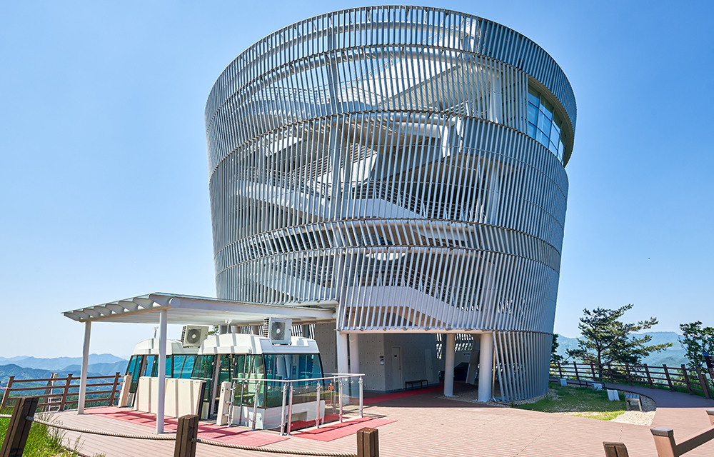

와 제 롤모델이 잡스에요!!! 아이폰 첫 출시되고 나서부터 계속 아이폰 쓰고 있는데 잡스가 너무 그리워요ㅠㅠ 지금은 돈만 벌려고 하는 것 같아서 디자인 발전도 없고ㅠㅠ와 제 롤모델이 잡스에요!!! 아이폰 첫 출시되고 나서부터 계속 아이폰 쓰고 있는데 잡스가 너무 그리워요ㅠㅠ 지금은 돈만 벌려고 하는 것 같아서 디자인 발전도 없고ㅠㅠ와 제 롤모델이 잡스에요!!! 아이폰 첫 출시되고 나서부터 계속 아이폰 쓰고 있는데 잡스가 너무 그리워요ㅠㅠ 지금은 돈만 벌려고 하는 것 같아서 디자인 발전도 없고ㅠㅠ와 제 롤모델이 잡스에요!!! 아이폰 첫 출시되고 나서부터 계속 아이폰 쓰고 있는데 잡스가 너무 그리워요ㅠㅠ 지금은 돈만 벌려고 하는 것 같아서 디자인 발전도 없고ㅠㅠ와 제 롤모델이 잡스에요!!! 아이폰 첫 출시되고 나서부터 계속 아이폰 쓰고 있는데 잡스가 너무 그리워요ㅠㅠ 지금은 돈만 벌려고 하는 것 같아서 디자인 발전도 없고ㅠㅠ
여행에 빠지다
1월에 떠나기 좋은 국내 여행지
찬란한 설경 만끽하는 전북 무주
글
우현석 (서울경제신문 객원기자 겸 여행 작가)
사진
전라북도 무주군청 제공
-
겨울이 오면 사람들은 눈구경을 위해 북쪽으로 간다. 대표적인 눈꽃여행지는 강원도 고산지대인 평창, 태백, 양구 등이다. 하지만 남쪽에도 강원도 못지 않게 눈이 쏟아지는 곳이 있으니 바로 무주다.
지난해는 온난화의 영향인 듯 몇 년 새 거의 눈이 오지 않았다. 그런데 지난 12월 취재길에 잇따라 눈이 내렸다. 양이 적은 것이 아쉬웠지만 겨울 초입의 눈구경이라니 ‘이 게 웬떡이냐’하는 생각 마저 들었다. 그도 그럴 것이 지난 12월에 찾은 곳은 ‘무주’였다. 무주는 남도에서 지대가 높아 겨울 추위가 중부지방 못지 않고 눈도 적잖이 온다. 그래서 덕유산에 스키장이 있는 것이다.
-
덕유산 아침
덕유산은 해발 1,614m의 향적봉으로 남한에서는 네 번째로 높은 봉우리다.
덕유산은 전라북도 무주와 장수, 경상남도 거창과 함양군 등 2개도 4개 군의 접경을 이루고 있다. 덕유산의 정상은 해발 1,614m의 향적봉으로 남한에서는 네 번째로 높은 봉우리다. 향적봉에서 중봉에 이르는 구간에는 주목과 구상나무가 군락을 이루고 있어 겨울에 눈이 내리면 찬란한 설경을 연출한다.
-
덕유산 중봉
덕유산 향적봉에서 중봉에 이르는 구간에는 주목과 구상나무가 군락을 이루고 있어 겨울에 눈이 내리면 찬란한 설경을 연출한다.
‘무주’의 또 다른 아이콘은 구천동 계곡이다. 구천동 계곡은 1경부터 33경까지 무수한 풍경을 지니고 있다. 정이환 문화관광해설사는 “구천동 33경이 펼쳐진 거리는 30여km에 달하지만, 해발 300~400m 사이에 있어 산행이 힘들지는 않다”고 말했다. 구천동이라는 이름과 관련해서는 설이 분분한데, ‘구’ 씨와 ‘천’ 씨가 많이 산다고 해서 붙은 이름이라는 얘기도 있고, 원나라 황제가 옥새를 분실했는데 이 곳에 사는 선비가 찾아 준 대가로 황제가 내려준 이름이라는 설도 있다.
덕유산은 임진왜란 이전까지는 광여산이라고 불렸다고 한다. 정 해설사는 “왜군이 산속으로 숨어든 우리 백성을 공격하러 올 때마다 구름이 끼고 바람이 불어 백성들이 목숨을 보전할 수 있었던 까닭에 ‘덕이 많고 너그러운 모산(母山)’이라는 의미로 덕유산(德裕山)이라고 부르게 됐다”고 말했다.
정이환 해설사의 이야기를 듣는 동안 어느새 구천동 33경 중 그 경치가 11경인 파회와 쌍벽을 이룬다는 18경 인월담에 도착했다. 인월담은 숲이 빽빽한 구천동 계곡 중 유일하게 하늘과 덕유산 봉우리를 조망할 수 있는 곳이다. 다음으로 발길이 닿은 곳은 비파담이다. 19경 비파담은 인월담에서 멀지 않은 곳에 있다. 비파담은 암반 위로 흐르는 물줄기가 여러 갈래의 폭포를 이뤄 떨어지며 생긴 못으로 그 모양이 현악기의 하나인 비파와 닮았다.
마지막으로 들른 곳은 33경 중 세 손가락 안에 든다는 파회였는데, 무주의 구천동 계곡 제11경인 파회(巴洄)는 연재(淵齊) 송병선이 이름을 붙인 곳으로, 소(沼)의 물이 쏟아지며 부서져 물보라를 일으키다가 바위에 부딪쳐 맴돈 후 그 사이로 흘러들어나가는 모습이 절경이다.
-

태권도원
전 세계에서 가장 큰 태권도경기장인데, 5천 명의 관객을 수용할 수 있는 규모로 70만평의 부지에 조성된 공간이다.
무주에 왔다면 태권도원에도 들러봐야 한다. 매일 곡예보다 더 아름다운 태권도 공연이 펼쳐지고 있기 때문이다. 태권도원의 뒷산은 이름이 백운산인데 그 의미가 “흰옷(태권도복) 입은 이들이 구름처럼 모여든다”고 해서 붙은 이름이라니 앞날을 내다 본 선조들의 예지력에 소름이 끼쳤다.
태권도원은 전 세계에서 가장 큰 태권도경기장인데 5천 명의 관객을 수용할 수 있는 규모로 약 230만m2(70만 평)의 부지에 조성된 공간이다. 태권도원은 태권도의 으뜸(元)이라는 의미로 VR로 만든 가상체험관, 숙소, 공연장 등이 있어 전 세계 태권도의 본산이라 할 만하다. 태권도원 내에 있는 태권도 박물관에는 1~3전시실이 있는데, 1전시실은 태권도의 역사 및 성장과정 등과 관련된 자료를 전시하고 있고, 2전시실은 기술과 정신에 관련된 콘텐츠를 3D애니메이션 등으로 기록해놓았으며, 3전시실은 명인들의 자료를 모아 전시를 계획하고 있다. 태권도원에는 다양한 볼거리와 함께 콘도미니엄 형태의 숙박시설도 구비돼 있어 가족단위 관광객들이 묵어갈 만하다.
TIP서울에서 가는 방법
-

 SRT 수서역 → 대전역 → 2번 급행버스(복합터미널정류장 하차) → 구천동행 시외버스정류장
SRT 수서역 → 대전역 → 2번 급행버스(복합터미널정류장 하차) → 구천동행 시외버스정류장 -

 승용차 경부고속도로 → 통영대전고속도로(비룡분기점에서 무주, 서대전방면 우회전) → 치마재로 → 무주 구천동
승용차 경부고속도로 → 통영대전고속도로(비룡분기점에서 무주, 서대전방면 우회전) → 치마재로 → 무주 구천동
-
최고예요
322
-
좋아요
322
-
슬퍼요
322
-
그저 그래요
322
-
화나요
322
※‘여행에 빠지다’ 코너는 이번 1월호를 마지막으로 연재를 마칩니다.
2월호부터는 세계를 무대로 항해하는 현대상선 해상직원이 해외 여행지 곳곳을 소개합니다.